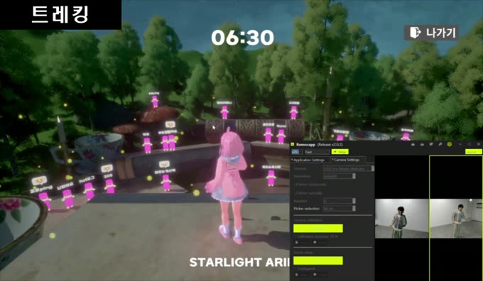
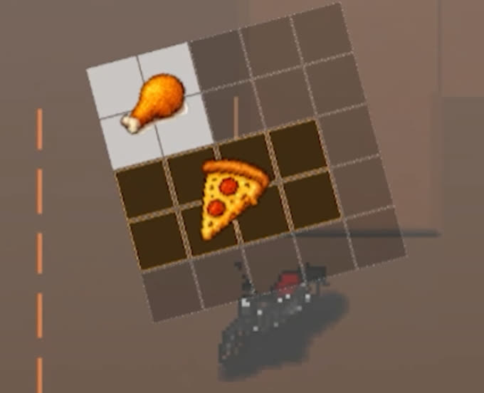
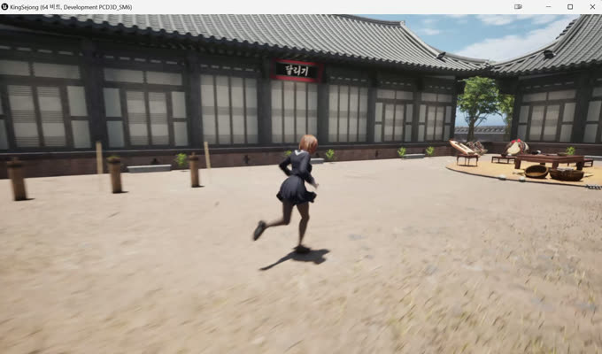
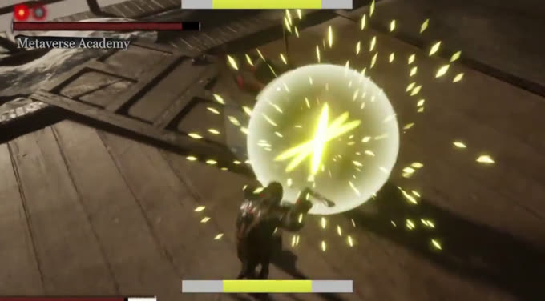

조준혁
GAME CLIENT PROGRAMMER · UNREAL ENGINE 5 / UNITY · C++ / C#
문제의 원인을 측정으로 확인하고, 그에 맞는 구조를 고르는 클라이언트 프로그래머입니다. 아래 프로젝트마다 무엇을 만들었는지 · 무엇이 막혔는지 · 어떻게 풀었는지를 화면과 함께 적었습니다.
- 수상
- 과학기술정보통신부 장관상 (대상) 2024.12 · 메타버스 아카데미 3기 · Stage On
- 출시
- Google Play · App Store Bounce Hero : 꿈돌이 · 사수와 2인 개발
- 학력
- 가천대학교 컴퓨터공학과 2019.02–2026.02 · GPA 4.02 / 4.5
프로젝트
상세 페이지 8 / 8-

Stage On
버튜버가 실시간 모션으로 무대에 서고 관객이 티켓을 사서 입장하는 가상 콘서트 플랫폼. 무대를 직접 만들어 저장하고 그 무대에서 공연을 엽니다.
- 담당
- 무대 구성 시스템(하늘·테마·특효·지면 조합),
SceneCapture썸네일 생성과 업로드, 외부 모션캡처 데이터를 언리얼로 들여오는 수신 구조 - 어려움
- 본 단위
RPC전달이 본 개수만큼 호출이 늘어 실시간을 못 따라감 →UDP소켓으로 직행하는OSC수신으로 전환
-
게임이 아니라 측정 도구
화면 대신 실제 로그로 정리MiniOscReceiver
위 Stage On에서 내린 구조 선택이 옳았는지 2년 뒤 직접 재구현해 재측정한 실험입니다. 플러그인이 감추던 소켓·수신 스레드·바이트 파서를 직접 만들었습니다.
- 담당
- 전부(개인).
UDP소켓, 1ms 폴링 수신 스레드, OSC 바이트 파싱(4바이트 정렬·빅엔디안·비트 재해석), SPSC 락프리 큐 마샬링 - 어려움
- 저부하에서는 세 방식이 똑같아 보임 → 부하를 실제 모션캡처 수준으로 올린 뒤에야 차이가 드러남. 잴 지표를 세 번 고쳐 잡음
-
Bounce Hero : 꿈돌이
대전관광공사 마스코트가 발판을 밟고 올라가는 모바일 점프 게임. 사수와 둘이 0부터 만들어 양대 마켓에 출시하고 라이브 운영까지 했습니다.
- 담당
- 발판 무한 생성기, 점수 기반 난이도 곡선, 타입별 오브젝트 풀,
인앱 결제(
IAP), 길드(Firebase트랜잭션)와 스테이지별 랭킹,AdMob연동. 커밋 155 / 302 - 어려움
- 풀링은
Destroy가 아니라 껐다 켜는 것이라 이벤트 구독과 색이 남음 → 수명 기준을Start에서OnEnable/OnDisable로 옮김
-

배달왕 김족구
주문을 받아 가방에 음식을 실어 배달하는 어드벤처. 가방이 테트리스처럼 칸을 차지하는 격자라, 공간을 어떻게 쓰느냐가 곧 플레이입니다.
- 담당
- 그리드 인벤토리 설계·구현(이벤트 기반 MVC), Yarn Spinner 대화 연동과 선택지 UI, 배달 도메인 재설계. 퀘스트 프레임워크와 입력 체계는 팀원 설계분
- 어려움
- 회전을 넣자 방향마다 판정 분기가 늘어남 →
EffectiveSize파생 속성으로 바꿔 판정 코드에서 분기 제거
-

프로젝트 세종대왕
한옥 마을에서 여럿이 모여 노는 멀티플레이 미니게임 모음. 달리기 · 대전 · 대화 세 종류의 맵이 있습니다.
- 담당
- 로비에서 게임 맵까지 들어가는 길 전체 — 세션 생성·검색·참가,
ServerTravel/ClientTravel분리, 로비 UI - 어려움
- 한글 방 이름이 Steam 세션에서 깨짐 → Base64로 인코딩해 등록하고 표시할 때 디코딩.
호스트 이탈 시 클라 고립은
OnNetworkFailure로 감지해 로비 복귀
-

Isekiro
적의 공격을 타이밍에 맞춰 튕겨내며 체간을 깎는 검격 액션. 세키로의 패링이 왜 손맛이 좋은지 궁금해서 구조를 직접 만들어 확인했습니다.
- 담당
- 패링 판정, 내적 기반 락온과
Line Trace시야 검증,Curve보간 그래플링 훅 - 어려움
- 판정 창을 좁히자 입력 자체가 막힘 → 판정 가능 시간과 쿨다운을 별개 타이머로 분리해 받아낼 창만 좁힘
-
화면 준비 중
MapleStory WorldsMapleBattleRoyaleArena
플레이어가 조작하지 않고 자동으로 싸우는 배틀로얄. 직접 하는 것은 직업 스킬 · 대시 · 방향 전환 셋뿐입니다. 넥슨 글로벌 개발 콘테스트 출품 예정.
- 담당
- 플레이어 이동·전투·스킬 시스템, 데이터 레이어, 서버 권위 구조
- 어려움
- 내가 넣은 타격 active 구간이 105스윙 실측에서 기여도 3%, 뒤쪽 73%는 미사용 → 기능을 철회하고 그 결론을 커밋에 남김
이동 드라이버 4단계 은퇴 → 서버 일원화 상세 보기 -
화면 준비 중
Gameplay Ability SystemGASPractice
LoL식 QWER 스킬 구조를 Gameplay Ability System으로 재현한 학습 프로젝트입니다.
- 담당
- 전부(개인). 발동(
GameplayAbility)과 비용·쿨다운·피해(GameplayEffect) 분리. 본인 작성 범위 8개 파일을 README에 명시 - 어려움
- 스킬이 늘 때마다 캐릭터 클래스에 조건 분기가 쌓임 → 쿨다운을 타이머가 아닌 태그의 존재 여부로 표현
스킬 추가해도 조건문이 늘지 않음 상세 보기
이력
프로젝트가 다루지 않는 사실실무
- 주식회사 디몽 — 게임 클라이언트 인턴
- 2025.03–06 · Unity / C#
두 프로젝트에 참여했습니다. 꿈돌이는 사수와 둘이 0부터 만들어 출시한 신규 개발이고,
ZOMVIRUS는 2025년 2월에 이미 출시돼 있던 PC VR 게임에
Steam Achievement구현과 무기 슬롯 리팩터링으로 참여했습니다.
학력 · 과정
- 가천대학교 컴퓨터공학과
- 2019.02–2026.02 · GPA 4.02 / 4.5 자료구조, 객체지향 프로그래밍, 소프트웨어 설계.
- 메타버스 아카데미 3기
- 2024.04–12 · Unreal Engine UE5 기반 팀 프로젝트로 실시간 콘텐츠 개발 과정을 수행했습니다.
수상
- 과학기술정보통신부 장관상 (대상)
- 2024.12 · 메타버스 아카데미 3기 성과공유회 가상 콘서트 플랫폼 Stage On으로 수상했습니다. 무대 전환 시스템, 버튜버 모델·모션 연동, 통신 구조 개선을 담당했습니다.